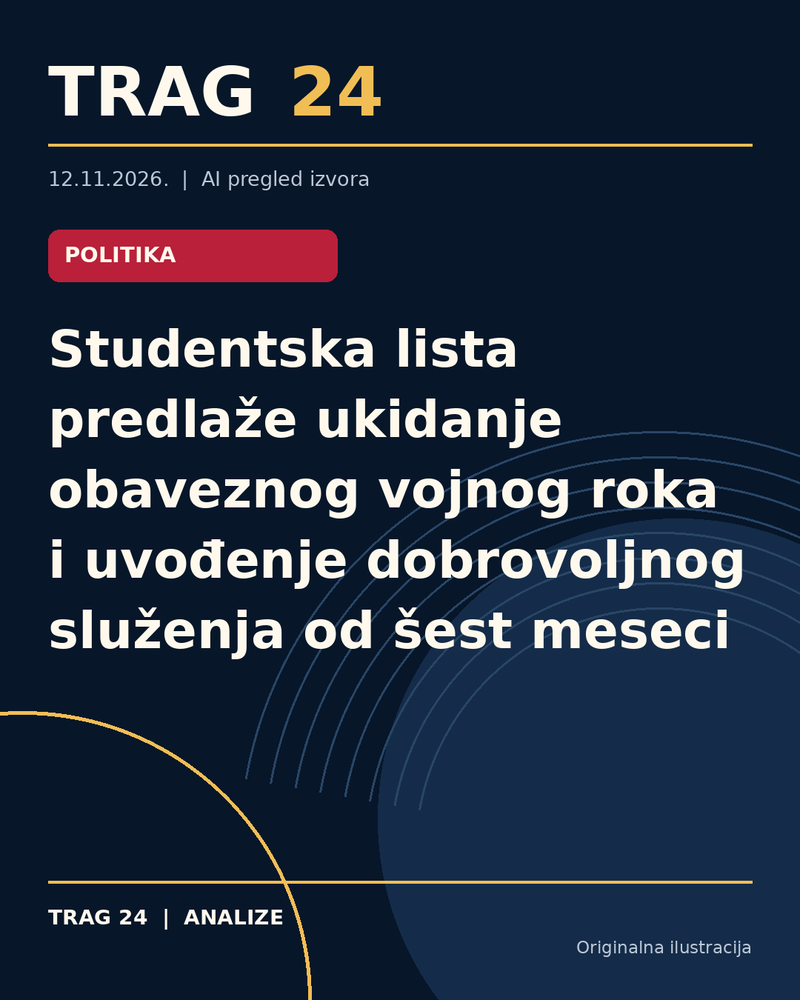

Studentska lista predlaže ukidanje obaveznog vojnog roka i uvođenje dobrovoljnog služenja od šest meseci

ŠTA SE DOGODILO
Studentska lista predstavila je svoj program reforme Ministarstva odbrane i Vojske Srbije koji između ostalog predviđa ukidanje ideje o vraćanju obaveznog vojnog roka, a umesto toga uvođenje dobrovoljnog vojnog roka u trajanju od šest meseci. Program takođe obuhvata povećanje primanja za vojnike, modernizaciju vojne opreme i industrije, kao i otvaranje istraga u slučajevima iz prošlosti koji se odnose na smrtne slučajeve unutar sistema odbrane.
HRONOLOGIJA
Nakon promene vlasti u Srbiji, postojeći planovi o vraćanju obaveznog vojnog roka nisu uvršteni u novi program koji je predstavila Studentska lista. Umesto obaveznog, u planu je predložen dobrovoljni vojni rok od šest meseci, sa ciljem privlačenja oko 3.000 dobrovoljaca godišnje. Takođe, planirane su dodatne pogodnosti za profesionalne vojnike i aktivnu rezervu. Novi program uključuje i nekoliko mera za unapređenje uslova služenja i modernizaciju sistema odbrane.
ŠTA NAVODE IZVORI
Svi izvori, Kurir, Blic i Novosti, iznose iste osnovne informacije o predlozima Studentske liste. Program uključuje povećanje osnovne plate vojnika, dodatke za noćni rad i opasne zadatke, kao i uvođenje subvencionisanih stambenih kredita za vojne ljude. Navodi se da bi dobrovoljni vojni rok trajao šest meseci, sa minimalnim mesečnim primanjima od 20.000 dinara i priznavanjem radnog staža. Aktivna rezerva obuhvatila bi 3.000 rezervista sa stalnim ugovorima i odgovarajućim naknadama. Takođe, izvorima je zajedničko isticanje plana za modernizaciju vojne tehnologije i opreme, kao i postupaka za ponovno otvaranje istraga vezanih za smrtne slučajeve u vojsci.
ŠTA JE POTVRĐENO
Potvrđeno je da Studentska lista u svom programu ne podržava vraćanje obaveznog vojnog roka, već predlaže dobrovoljni vojni rok od šest meseci. Planirano je privlačenje oko 3.000 dobrovoljaca godišnje, sa platežnim i stambenim benefitima. Takođe je potvrđeno da se u planu predviđa modernizacija PVO sistema pod nazivom "SOVA 24", unapređenje industrijskih kapaciteta i vojne elektronike u saradnji sa fakultetima. Postojeći slučajevi pogibija u vojsci bi bili predmet revizije i istraga. Sistem odbrane bi se nalazio pod civilnom i demokratskom kontrolom sa stručnim kadrom na rukovodećim mestima.
ŠTA NIJE POTVRĐENO
Nije potvrđeno da li će postojeći planovi prethodne vlasti za vraćanje obaveznog vojnog roka biti ponovo razmatrani ili ukinuti u punom obimu. Takođe nema informacija o datumu početka implementacije novog programa i konkretnim koracima za njegovu realizaciju. Detalji o mehanizmima kontrole i izboru stručnjaka za rukovodeće pozicije nisu precizirani. Nema podataka o budžetskim okvirima za predloženu modernizaciju i povećanje plata.
ŠTA OSTАJE OTVORENO: Ostaje pitanje da li će dobrovoljni vojni rok privući dovoljnu brojku mladih za održavanje kapaciteta Vojske Srbije. Takođe je neizvesno kako će se odvijati proces istraga u starim slučajevima i da li će to uticati na reformu sistema odbrane. Nije poznato kako će novoformirana komisija za kontrolu i nadzor u vojnoj industriji funkcionisati u praksi. Ostaje nepoznato i kako će nove mere i beneficije uticati na motivaciju i zadržavanje kadra u profesionalnoj vojsci.
Izvori
- https://www.kurir.rs/vesti/drustvo/10159878/plan-studentske-liste-za-vojsku-srbije-dobrovoljni-vojni-rok
- https://www.blic.rs/vesti/politika/obavezni-vojni-rok-pada-u-vodu-ovo-je-plan-studentske-liste-za-vojsku-srbije/y3bn8qx
- https://www.novosti.rs/vesti/politika/1670304/studentska-lista-ukida-planove-sluzenje-obaveznog-vojnog-roka-totalni-preokret-nakon-izbora
Ova analiza je pripremljena uz pomoć veštačke inteligencije na osnovu javno dostupnih izvora. Navodi izvora nisu nužno nezavisno potvrđeni.